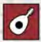
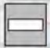
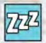

Castleofmadkingludwig
Board Game Arena 官方规则文档
Set up
Round Structure
1. Upkeep
- Place a coin (from the bank) on each room left in the market from the previous round.
- Refill empty spaces in the market by drawing cards from the room deck and taking a room from the indicated pile.
- Pass the Master Builder marker.
2. The new Master Builder rearranges the rooms in the market in any way they like.
3. Other players may each buy one room, paying the Master Builder. The room must be placed immediately in a legal position in the player's castle
- A player may buy a stairs or hallway from the supply instead of buying a room. The cost is always 3000 and is still paid to the Master Builder.
- A player may pass to take 5000 from the bank.
4. Finally, the Master Builder may buy a room from whatever is left in the market. The Master Builder pays the bank. They may buy a corridor or pass, as usual.
Game End: When the last card in the Room deck is drawn, players finish the current round, then end the game.
Room Placement
All rooms:
- Each new room must connect to the entrance of a room already placed.
- Rooms cannot overlap
- There must always be at least 1 external entrance to the castle.
Downstairs Rooms: Downstairs Rooms can only connect to the bottom of stairs, other downstairs rooms or a downstairs hallway.
Outdoor Rooms: The fenced edge of an Outdoor Room cannot touch another room.
Activity Rooms: Activity Rooms give penalties if they touch certain types of rooms, as indicated on the room.
Scoring
Rooms
Rooms are scored as they are played. This includes points for the new room (top left corner), connection bonuses/penalties of the new room, connection bonuses/penalties of surrounding rooms, and downstairs rooms, as well as completion rewards.
Connection bonuses require rooms to share a doorway; touching walls or a blocked entrance is not enough. Connections score per connected room, not per doorway: connecting two rooms by multiple doors does not count extra.
Connection penalties from activity rooms do not require doorways. Any adjacent room (of an indicated type) which is touching the activity room subtracts points.
Downstairs rooms do not require any adjacency. Bonus points from downstairs rooms score for any matching room in the castle.
King's Favours
King's Favours are scored at the end of game. Ties are split, e.g. if two players tie for 2nd, they each get 3 points (4+2 divided in two).
1st ⇒ 8 VPs
2nd ⇒ 4 VPs
3rd ⇒ 2 VPs
4th ⇒ 1 VPs
Bonus Cards
Each player scores points for their bonus cards.
Depleted Stacks
Each room whose stack is empty is worth an extra 2 points. For example, if the stack of 100-size rooms is empty, then each 100-size room on a player's board scores 2 points. Only the stack in the supply matters; some of the rooms might still be in the market, the bonus will score as long as the stack is depleted.
Money
1 VP for each 10 000 of money leftover
Completion Rewards
A room is completed when all of its entrances are connected to entrances on other rooms. A room with a blocked entrance (leading to a wall) cannot be completed. Each room type offers different rewards upon completion.
| Icon | Room Type | Reward |
|---|---|---|
 |
Activity Room | Gain 5 VPs |
 |
Corridor | Gain and place a free Hallway or Stairs. (Maximum once per turn) |
| Downstairs Room | For every 2nd (4th, 6th, ...) Downstairs Room completed,
gain your choice of the 7 other completion rewards.
| |
| Food Room | Take another turn. | |
| Living Room | Re-score this room, including the room's VP value and connection bonus. | |
| Outdoor Room | Gain 10000 in coins from the supply. | |
 |
Sleeping Room | Choose 0, 1, or 2 rooms from a stack of room tiles to be placed on top of the room deck.
(These room tiles will become the next ones added to the market) |
| Utility Room | Draw 2 bonus cards from the deck and keep 1 of them. |